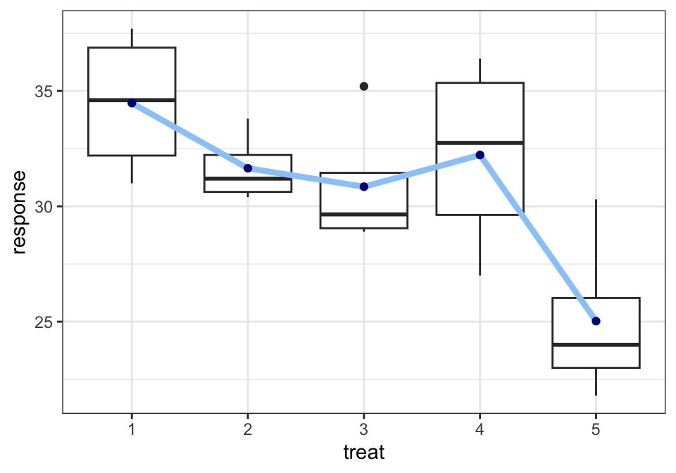
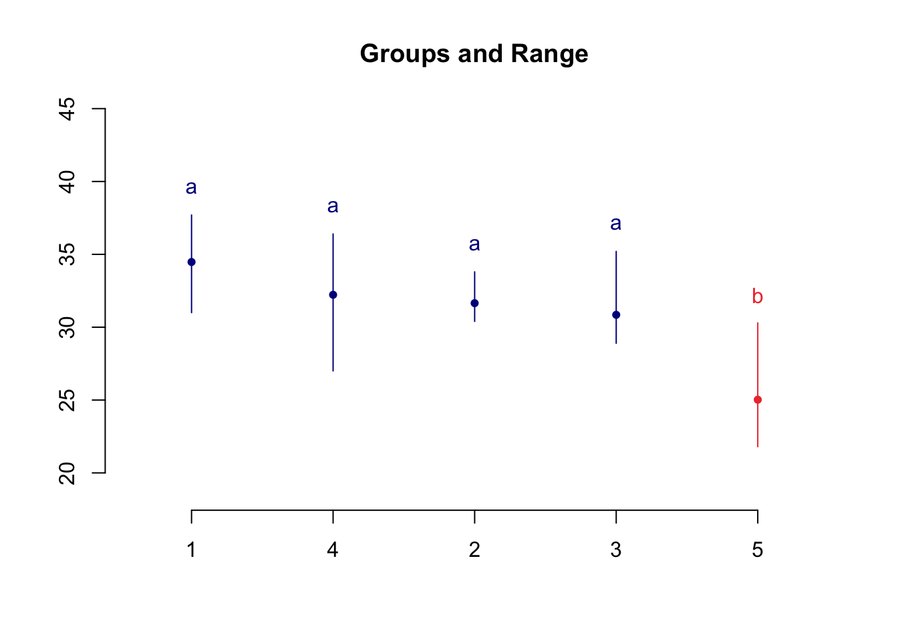

library(tidyverse)
library(kableExtra)
library(ggplot2)
library(here)
library(agricolae)5 분산분석
5.1 필요한 패키지
5.2 일원배치법
일원배치법 실험((one-way factor design)에서는 하나의 요인(factor) A 의 효과를 측정한다. 요인 A 에 대하여 서로 다른 a 개의 수준(level), \(A_1, A_2, \dots, A_a\))의 효과를 비교한다고 가정하자. 각 수준에 대하여 \(r_i\) 개의 반응값을 반복 측정한다.
이제 \(i\) 번쨰 수준에서 측정된 \(j\) 번째 반응변수의 값을 \(y_{ij}\) 라고 하자. 일원배치법에서 측정된 자료들은 다음과 같은 모형을 가진다고 가정한다.
\[ y_{ij} = \mu_i + e_{ij} \quad \text{ where } \quad e_{ij} \sim N(0,\sigma_E^2) \tag{5.1}\]
여기서 오차항 \(e_{ij}\)는 모두 독립이다.
모형 5.1 은 일반적으로 평균모형(mean model) 이라고 부르며 모형의 이름대로 \(\mu_i\)는 \(i\)번째 수준에서 반응변수의 평균을 의미한다.
\[ E(y_{ij}) = E(\mu_i + e_{ij}) = \mu_i \]
이제 모형 5.1 을 변형하여 다른 형식의 모형을 만들어 보자.
\[ \begin{aligned} y_{ij} & = \mu_i + e_{ij} \\ & = \mu + (\mu_i - \mu) + e_{ij} \\ & = \mu + \alpha_i + e_{ij} \end{aligned} \]
위의 모형에서 모수 \(\mu\)는 반응변수의 전체 평균을 의미하며 \(\alpha_i = \mu_i - \mu\)는 \(i\)번째 수준의 평균이 전체 평균과 어떻게 다른지 나타내는 수준의 상대적 효과를 의미한다.
다음의 식으로 정의된 일원배치 모형을 주효과모형(main effect model) 이라고 부른다. 모수 \(\alpha_i\)는 \(i\) 번째 집단의 효과(처리 효과; treatment effect)를 나타낸다고 할 수 있다.
\[ y_{ij} = \mu + \alpha_i + e_{ij} \text{ where } e_{ij} \sim N(0,\sigma_E^2) \tag{5.2}\] 여기서 오차항 \(e_{ij}\) 는 모두 독립이며 다음과 같은 제약조건이 있다.
\[ \sum_{i=1}^a \alpha_i = 0 \tag{5.3}\]
제약조건 5.3 는 모수의 개수(\(a+1\))가 그룹의 개수(\(a\))보다 많아서 발생하는 문제를 해결하기 위하여 모수에 대한 제약 조건 1개를 고려해서 모수의 개수와 그룹의 개수를 맞추어준 것이다.
제약조건 5.3 은 sum to zero조건이라고 부르며 문제를 해결하는 유일한 조건은 아니다. 예를 들어서 조건 5.3 을 대신하여 \(\alpha_1=0\) 인 set to zero 조건을 사용할 수 있다.
5.3 가설
집단의 모평균을 편의상 \(\mu_1, \mu_2, \cdots, \mu_a\) 이라고 하자. 평균모형 5.1 을 가정하고 집단들 사이에 차이가 있는지에 대한 가설은 다음과 같다.
\[ H_0: \mu_1 = \mu_2 =\dots =\mu_a \quad \text{vs.} \quad H_1: \text{ not } H_0 \]
위의 가설에서 주의할 점은 대립가설 \(H_1\)의 경우를 고려하면 평균들이 서로 다른 경우가 매우 다양하다는 것이다. 예를 들어 집단이 3개 인 경우 \(\mu_1 = \mu_2 < \mu_3\)일 수 도 있고 \(\mu_1 < \mu_2 < \mu_3\) 있으며 이 외에 매우 다양한 경우들이 있다.
이제 효과모형 5.2 을 고려하면 집단들 사이에 차이가 있는지에 대한 가설을 다음과 같이 바꿀수 있다. 집단에 대한 효과가 모두 0이 되면 집단 간의 평균에 대한 차이는 없다.
\[ H_0: \alpha_1 = \alpha_2 =\cdots=\alpha_a =0 \quad \text{vs.} \quad H_1: \text{ not } H_0 \tag{5.4}\]
5.4 변동의 분해
이제 관측값이 가진 모든 변동을 집단 간의 변동(각 집단의 평균의 차이가 얼마나 나는지에 대한 통계량)과 집단 내의 변동(각 집단내에서 관측값들의 퍼진 정도)를나누어 파악할 수 있는 통계량을 찾아서 검정 통계량을 구성해 보자.
일단 각 집단의 반복 측정값의 횟수는 모두 같다고 가정하자(\(r_i=r\)). 전체 평균과 집단의 평균을 다음과 같이 정의하자.
\[ \bar{\bar {y}} = \frac{\sum_{i=1}^a \sum_{j=1}^r y_{ij}}{ar} =\frac{T}{ar}, \quad \bar {y}_{i.} = \frac{\sum_{j=1}^r y_{ij}}{r} = \frac{T_{i.}}{r} \]
이제 하나의 관측값 \(y_{ij}\)과 전체 평균 \(\bar{\bar {y}}\) 간의 편차(deviation)를 다음과 같이 분해해 보자.
\[ \underbrace{ y_{ij} - \bar{\bar {y}} }_{\text{total deviation}} = \underbrace{ ( y_{ij} - \bar {y}_{i.} )}_{\text{within-group deviation}} + \underbrace{(\bar {y}_{i.} - \bar{\bar {y}} )}_{\text{between-group deviation}} \tag{5.5}\]
식 5.5 에서 집단 평균과 총 평균의 편차 (\(\bar {y}_{i.} - \bar{\bar {y}}\))는 처리의 효과를 측정할 수 있는 통계량이다. 집단 간의 차이를 반영하는 양으로 처리 효과 \(\alpha_i\)들에 의하여 발생한다.
집단 내의 관측값과 집단 평균의 차이 (\(y_{ij} - \bar {y}_{i.}\))는 집단 내의 변동을 나타내는 통계량으로 측정 오차 \(e_{ij}\)에 의하여 발생한다.
식 5.5 의 각 편차들은 양수와 음수로서 부호를 가지기 때문에 이를 변동으로 표현하기 위하여 차이를 제곱하여 합친 제곱합(sum of squares)을 고려해 보자.
\[ \begin{aligned} \sum_{i=1}^a \sum_{j=1}^r (y_{ij} - \bar{\bar {y}})^2 & = \sum_{i=1}^a \sum_{j=1}^r \left [ ( y_{ij} - \bar {y}_{i.} ) + (\bar {y}_{i.} - \bar{\bar {y}} ) \right ]^2 \\ & = \sum_{i=1}^a \sum_{j=1}^r ( y_{ij} - \bar {y}_{i.} )^2 + \sum_{i=1}^a \sum_{j=1}^r (\bar {y}_{i.} - \bar{\bar {y}} )^2 + 2 \sum_{i=1}^a \sum_{j=1}^r ( y_{ij} - \bar {y}_{i.} ) (\bar {y}_{i.} - \bar{\bar {y}} ) \\ & = \sum_{i=1}^a \sum_{j=1}^r ( y_{ij} - \bar {y}_{i.} )^2 + \sum_{i=1}^a r (\bar {y}_{i.} - \bar{\bar {y}} )^2 + 0 (why?) \\ \end{aligned} \]
결과적으로 다음과 같은 변동의 분해를 제곱합의 형식으로 얻을 수 있다.
\[ \underbrace{ \sum_{i=1}^a \sum_{j=1}^r (y_{ij} - \bar{\bar {y}})^2 }_{\text{total variation}} = \underbrace{ \sum_{i=1}^a \sum_{j=1}^r ( y_{ij} - \bar {y}_{i.} )^2 }_{\text{within-group variation}} + \underbrace{\sum_{i=1}^a \sum_{j=1}^r (\bar {y}_{i.} - \bar{\bar {y}} )^2 }_{\text{between-group variation}} \tag{5.6}\]
분해식 5.6 에서 나타난 각 제곱합에 대한 이름과 의미를 살펴보자.
- \(SST\) 를 총 제곱합(Total Sum of Squares)이라고 부르며 자료의 전체 변동을 의미한다.
\[ SST = \sum_{i=1}^a \sum_{j=1}^r (y_{ij} - \bar{\bar {y}})^2 \]
- \(SSE\) 를 잔차 제곱합(Residual Sum of Squares)이라고 부르며 관측 오차에 발생된 집단 내의 변동 또는 급내 변동(within-group variation)을 의미한다.
\[ SSE = \sum_{i=1}^a \sum_{j=1}^r ( y_{ij} - \bar {y}_{i.} )^2 \]
- \(SSA\) 를 처리 제곱합(Treatment Sum of Squares)이라고 부르며 처리들의 차이로 발생하는 변동으로거 집단 간의 변동 또는 급간 변동(bwtween-group variation)을 의미한다.
\[ SSA = \sum_{i=1}^a \sum_{j=1}^r (\bar {y}_{i.} - \bar{\bar {y}} )^2 =\sum_{i=1}^a r (\bar {y}_{i.} - \bar{\bar {y}} )^2 \]
이제 분해식 5.6 을 다음과 같이 나타낼수 있다.
\[ SST = SSA + SSE \tag{5.7}\]
위의 분해식의 통계량들을 보면 다음과 같은 사실을 알수 있다.
집단 간의 변동의 크기를 나타내는 처리제곱합(\(SSA\))이 커질수록 집단 간의 평균이 유의한 차이가 난다는) 증거가 강해진다.
위의 현상을 다시 말하면, 집단내의 변동의 크기를 나타내는 오차제곱합(\(SSE\))이 작아질수록 집단 간의 평균이 유의한 차이가 증거가 강해진다.
총제곱합은 자료의 전체 변동을 나타내며 그룹을 어떻게 나누건 그 값은 언제나 일정하다.
총제곱합(\(SST\))은 처리제곱합(\(SSA\))과 오차제곱합(\(SSE\))의 합이다.
따라서 처리제곱합이 커지면 오차제곱합이 상대적으로 작아지는 현상을 나타낸다. 또한 처리제곱합이 작아지면 오차제곱합이 상대적으 커지는 현상을 나타낸다.
처리제곱합과 오차제곱합의 비율로 집단 간의 차이를 추론할 수 있다.
5.5 자유도
제곱합은 편차(deviation)의 제곱들을 더한 형태로서 각 제곱합들에 대하여 해당하는 자유도(degrees of freedom; df 또는 \(\phi\)로 표기)를 구할 수 있다.
제곱합의 자유도 = 제곱합을 구성하는 편차의 개수 – 선형제약 조건의 개수 각 제곱합에 대한 선형제약조건은 편차들의 합이 0이 되는 조건이다. 이제 식 5.7 에 주어진 제곱합의 자유도에 대한 정보를 다음과 같이 정리할 수 있다.
| 제곱합 | 편차의 개수 | 제약조건 | 제약조건의 수 | 자유도 |
|---|---|---|---|---|
| \(SST\) | \(ar\) | \(\sum_{i=1}^a \sum_{j=1}^r (y_{ij} - \bar{\bar {y}})=0\) | 1 | \(\phi_T= ar-1\) |
| \(SSA\) | \(a\) | \(\sum_{i=1}^a (\bar {y}_{i.} - \bar{\bar {y}} ) =0\) | 1 | \(\phi_A=a-1\) |
| \(SSE\) | \(ar\) | \(\sum_{j=1}^r ( y_{ij} - \bar {y}_{i.} ) =0, i=1,2,..,a\) | a | \(\phi_E=ar-a\) |
반드시 유의해야 할 점은 총제곱합의 자유도는 처리제곱합의 자유도와 오차제곱합의 자유도의 합과 같다는 것이다. 이를 이용하면 두 개의 자유도만 구해면 나머지 하나의 자유도를 쉽게 구할 수 있다.
5.6 평균제곱합과 F-통계량
이제 가설 5.4 을 검정하기 위한 통계량을 구성해 보자. 먼저 다음과 같은 제곱합들을 각 자유도로 나눈 평균제곱합(Mean Sum of Squares)를 정의한다.
\[ MSA = \frac{SSA}{\phi_A}, \quad MSE =\frac{SSE}{\phi_E} \tag{5.8}\]
집단 간의 변동과 집단 내의 변동의 상대적 비율로 그룹 간의 차이를 검정할 수 있다는 개념을 확장하여 다음과 같은 F-통계량 \(F_0\) 를 만들어 보자.
\[ F_0 = \frac{MSA}{MSE} = \frac{\text{between-group variation}} {\text{within-group variation}} \tag{5.9}\]
위 식 5.9 에서 정의된 F-통계량은 그룹 간에 평균의 차이가 클수록, 그룹 내의 변동이 작을 수록 그 값이 커진다. 따라서 F-통계량의 값이 크면 클수록 귀무가설에 반대되는 증거가 강해진다.
이렇게 전체의 변동을 집단 간의 변동과 집단 내의 변동으로 나누어 집단 간의 평균의 차이를 추론하는 방법을 분산분석(Analysis of Variance, ANOVA)이라고 한다.
5.7 분산분석을 이용한 F-검정
이제 식 5.9 에서 정의된 F-통계량을 이용하여 가설 5.4 를 검정하는 통계적 방법을 만들어 보자. 일단 두 제곱합의 통계적 성질은 다음과 같다.
잔차 제곱합을 오차항의 분산으로 나눈 통계량은 자유도가 \(\phi_E\) 를 가지는 카이제곱 분포를 따른다.
\[ \frac{SSE}{\sigma_E^2} \sim \chi^2(\phi_E) \]
귀무가설이 참인 경우 처리 제곱합을 오차항의 분산으로 나눈 통계량은 자유도가 \(\phi_A\) 를 가지는 카이제곱 분포를 따른다.
\[ \frac{SSA}{\sigma_E^2} \sim \chi^2(\phi_A) \quad \text{ under } H_0 \]
잔차 제곱합과 처리 제곱합은 서로 독립이다.
따라서 귀무가설이 참인 경우 F-통계량은 자유도가 \(\phi_A, \phi_E\)를 가지는 F-분포를 따른다.
\[ F_0 = \frac{MSA}{MSE} = \frac{ \tfrac{SSA/\sigma_E^2}{\phi_A}} {\tfrac{SSE/\sigma_E^2}{\phi_E }} \sim F(\phi_A, \phi_E) \quad \text{ under } H_0 \tag{5.10}\]
유의수준 \(\alpha\)에서 F-통계량이 기각역을 벗어나면 귀무가설을 기각한다.
\[ \text{ Reject } H_0 \text{ if } F_0 > F(1-\alpha, \phi_A, \phi_E) \]
또는 다음과 같이 계산된 p-값이 유의수준 \(\alpha\) 보다 작으면 귀무가설을 기각한다.
\[ p-value = P[F(\phi_A, \phi_E) > F_0 ] \]
F-통계량을 정의할 때 편리하고 유용하게 사용되는 것이 다음과 같은 분산분석표(ANOVA table)이다.
| 요인 | 제곱합 | 자유도 | 평균제곱합 | \(F_0\) | p-값 |
|---|---|---|---|---|---|
| 처리 | \(SSA\) | \(\phi_A = a-1\) | \(MSA=SSA/\phi_A\) | \(F_0=MSA/MSE\) | \(P[F(\phi_A, \phi_E) > F_0 ]\) |
| 잔차 | \(SSE\) | \(\phi_E=a(r-1)\) | \(MSE=SSE/\phi_E\) | ||
| 총합 | \(SST\) | \(\phi_T = ar-1\) |
5.8 분산분석 후의 추정
분산분석에서 고려한 요인 A의 수준에 따라서 반응값의 평균에 유의한 차이가 있다고 결론이 나면 그룹 간의 모평균을 차이에 대한 더 자세한 정보가 필요하다. 즉 집단들의 평균이 서로 유의하게 다르거나 같은지에 대한 정보를 얻는 것이 중요하다.
일단 모집단의 분산 \(\sigma_E^2\) 에 대한 추정은 잔차제곱합의 분포를 이용하면 다음과 같은 불편추정량을 얻을 수 있다.
\[ \hat \sigma_E^2 = MSE, \quad E(MSE) = \sigma_E^2 \]
다음으로 각 수준(집단)에 대한 평균에 대한 추정량은 표본평균 \(\bar {y}_{i.}\) 이며
\[ \hat \mu_i = \widehat {\mu + \alpha_i} = \bar {y}_{i.} \quad E(\bar {y}_{i.}) =\mu_i \]
\(100(1-\alpha)\) % 신뢰구간(confidence interval)은 다음과 같이 주어진다.
\[ \bar {y}_{i.} \pm t(1-\alpha/2, \phi_E) \sqrt{ \frac{MSE}{r}} \]
야기서 \(t(1-\alpha/2, \phi_E)\)는 자유도 \(\phi_E\)를 가지는 t-분포의 \(1-\alpha/2\) 분위수를 의미한다.
이제 두 개의 수준에 대한 평균의 차이에 대한 통계적 추론을 생각해 보자. 수준 \(A_i\)와 \(A_j\)의 평균의 차이에 대한 추정과 검정을 하려고 한다.
\[ \delta_{ij} = \mu_i-\mu_j = \alpha_i - \alpha_j \]
두 평균의 차이 \(\delta_{ij}\) 에 대한 \(100(1-\alpha)\) % 신뢰구간은 다음과 같이 주어진다.
\[ ( \bar {y}_{i.} - \bar {y}_{j.}) \pm t(1-\alpha/2, \phi_E) \sqrt{ \frac{2MSE}{r}} \tag{5.11}\]
신뢰구간 7.1 에서 두 개의 표본 평균 \(\bar {y}_{i.}\)와 \(\bar {y}_{j.}\) 은 서로 독립인 것에 유의하자.
이제 마지막으로 두 평균의 차이 \(\delta_{ij}\) 에 대한 가설을 검정하여고 한다.
\[ H_0 : \alpha_i = \alpha_j \quad \text{ vs. } \quad H_1: \alpha_i \ne \alpha_j \]
유의 수준 \(\alpha\)에서 다음과 같은 조건을 만족하면 위의 귀무가설을 기각한다.
\[ \left | \bar {y}_{i.} - \bar {y}_{j.} \right | > t(1-\alpha/2, \phi_E) \sqrt{ \frac{2MSE}{r}} \tag{5.12}\]
식 7.2 에서 주어진 귀무 가설 \(\delta_{ij}=0\) 을 기각하는 조건은 식 7.1 에 주어진 신뢰구간이 0 을 포함하지 않는 조건과 동일하다.
식 7.2 에서 검정을 위한 조건의 우변을 최소유의차(least significant difference; LSD) 라고 부른다. 두 수준의 차이가 유의하려면 두 평균 차이의 절대값이 최소한 최소유의차의 값보다 커야한다.
\[ \text{LSD} =t(1-\alpha/2, \phi_E) \sqrt{ \frac{2MSE}{r}} \]
5.9 예제: 저혈당 임상실험
부교재 Jaewon Lee (2005) 의 5장에 나오는 당뇨병 환자에 대한 예제를 이용하여 치료군 간의 차이를 살펴보자. 한 연구자는 저혈당에 걸린 20명의 환자에 대하여 혈당을 높이는 서로 다른 5개의 약품 효능을 비교하고자 한다. 환자 20명을 5개의 그룹(treat)으로 나누어 각각의 약품을 이용하여 1개월 간 치료를 실시하였다.
치로 시작전에 모든 환자의 혈당을 측정하고(baseline) 1개월의 치료 기간이 지난 후 혈당을 측정하였다(response).
임상시험자료를 다음과 같이 읽어서 data.frame 형식으로 저장한다.
diabetes <- read.csv(here("data", "chapter-5-data.txt"), sep='', header = F)
colnames(diabetes) <- c("treat", "baseline", "response")
diabetes$treat<- factor(diabetes$treat)
diabetes <- diabetes %>% arrange(treat)저혈당 환자에 대한 임상실험에서 얻은 자료는 다음과 같다.
diabetes %>%
kbl(caption = "저혈당 환자에 대한 임상실험 결과") %>%
kable_styling(bootstrap_options = "striped", full_width = F, position = "center",
font_size = 12)| treat | baseline | response |
|---|---|---|
| 1 | 27.2 | 32.6 |
| 1 | 33.0 | 37.7 |
| 1 | 22.0 | 36.6 |
| 1 | 26.8 | 31.0 |
| 2 | 28.6 | 33.8 |
| 2 | 26.5 | 30.7 |
| 2 | 26.8 | 31.7 |
| 2 | 26.8 | 30.4 |
| 3 | 28.6 | 35.2 |
| 3 | 23.2 | 28.9 |
| 3 | 22.4 | 29.1 |
| 3 | 24.4 | 30.2 |
| 4 | 29.3 | 35.0 |
| 4 | 30.3 | 36.4 |
| 4 | 21.8 | 27.0 |
| 4 | 24.3 | 30.5 |
| 5 | 20.4 | 24.6 |
| 5 | 25.1 | 30.3 |
| 5 | 19.6 | 23.4 |
| 5 | 18.1 | 21.8 |
각 치료그룹의 치료 후 혈당(response)의 치료집단 별 기초통계량을 구해보자.
dfsumm <- diabetes %>%
group_by(treat) %>%
summarise(mean = mean(response), median = median(response), sd = sd(response),
min = min(response), max = max(response))
dfsumm# A tibble: 5 × 6
treat mean median sd min max
<fct> <dbl> <dbl> <dbl> <dbl> <dbl>
1 1 34.5 34.6 3.19 31 37.7
2 2 31.6 31.2 1.54 30.4 33.8
3 3 30.8 29.6 2.96 28.9 35.2
4 4 32.2 32.8 4.30 27 36.4
5 5 25.0 24 3.70 21.8 30.3치료집단 별로 치료그룹의 치료 후 혈당(response)의 분포를 다음과 상자그림으로 비교해보자.
ggplot(diabetes, aes(treat, response)) +
geom_boxplot() +
geom_line(data=dfsumm, aes(x=treat, y=mean, group=1), linewidth=1.5, col="#9ACBF9") +
geom_point(data=dfsumm, aes(x=treat, y=mean), col="darkblue") +
theme_bw()
이제 위에서 제시한 F-검정을 이용하여 약품별로 치료 후 혈당의 차이가 있는지 검정해보자.
\[ H_0: \mu_1=\mu_2=\mu_3=\mu_4 \quad \text{ vs. }\quad H_1: \text{ not } H_0 \]
anova.res <- aov(response~treat,data=diabetes)
summary(anova.res) Df Sum Sq Mean Sq F value Pr(>F)
treat 4 198.4 49.60 4.643 0.0122 *
Residuals 15 160.3 10.68
---
Signif. codes: 0 '***' 0.001 '**' 0.01 '*' 0.05 '.' 0.1 ' ' 1위의 분산분석표에서 p-값이 유의수준 5% 보다 매우 작으므로 약품별로 치료 후 혈당의 평균이 같다는 귀무가설을 기각한다. 따라서 5개의 집단의 치료 후 혈당 평균은 유의하게 다르다고 할 수 있다. 여기서 유의할 점은 ANOVA를 이용한 F-검정은 그룹 간의 차이가 있다는 것을 의미하지만 어떻게 다른지에 대한 정보를 주지 않는다.
최소유의차(LSD) 방법에 의하여 처리 간의 평균을 신뢰구간을 구하고 차이가 있는지 검정할 수 있다. LSD.test() 함수는 agricolae 패키지에서 제공한다.
### Mean of response by factor
result1 <- LSD.test(anova.res, "treat", group=FALSE, console = TRUE)
Study: anova.res ~ "treat"
LSD t Test for response
Mean Square Error: 10.68417
treat, means and individual ( 95 %) CI
response std r se LCL UCL Min Max Q25 Q50 Q75
1 34.475 3.188913 4 1.634332 30.9915 37.9585 31.0 37.7 32.200 34.60 36.875
2 31.650 1.537314 4 1.634332 28.1665 35.1335 30.4 33.8 30.625 31.20 32.225
3 30.850 2.955785 4 1.634332 27.3665 34.3335 28.9 35.2 29.050 29.65 31.450
4 32.225 4.297577 4 1.634332 28.7415 35.7085 27.0 36.4 29.625 32.75 35.350
5 25.025 3.698986 4 1.634332 21.5415 28.5085 21.8 30.3 23.000 24.00 26.025
Alpha: 0.05 ; DF Error: 15
Critical Value of t: 2.13145
Comparison between treatments means
difference pvalue signif. LCL UCL
1 - 2 2.825 0.2405 -2.1014081 7.751408
1 - 3 3.625 0.1376 -1.3014081 8.551408
1 - 4 2.250 0.3458 -2.6764081 7.176408
1 - 5 9.450 0.0010 *** 4.5235919 14.376408
2 - 3 0.800 0.7341 -4.1264081 5.726408
2 - 4 -0.575 0.8069 -5.5014081 4.351408
2 - 5 6.625 0.0118 * 1.6985919 11.551408
3 - 4 -1.375 0.5608 -6.3014081 3.551408
3 - 5 5.825 0.0235 * 0.8985919 10.751408
4 - 5 7.200 0.0071 ** 2.2735919 12.126408최소유의차(LSD) 방법에 의한 평균의 차이에 대한 결과를 이용하여 처리를 다음과 같이 그룹화 하여 보여줄 수 있다.
result2 <- LSD.test(anova.res, "treat", group=TRUE, console = TRUE)
Study: anova.res ~ "treat"
LSD t Test for response
Mean Square Error: 10.68417
treat, means and individual ( 95 %) CI
response std r se LCL UCL Min Max Q25 Q50 Q75
1 34.475 3.188913 4 1.634332 30.9915 37.9585 31.0 37.7 32.200 34.60 36.875
2 31.650 1.537314 4 1.634332 28.1665 35.1335 30.4 33.8 30.625 31.20 32.225
3 30.850 2.955785 4 1.634332 27.3665 34.3335 28.9 35.2 29.050 29.65 31.450
4 32.225 4.297577 4 1.634332 28.7415 35.7085 27.0 36.4 29.625 32.75 35.350
5 25.025 3.698986 4 1.634332 21.5415 28.5085 21.8 30.3 23.000 24.00 26.025
Alpha: 0.05 ; DF Error: 15
Critical Value of t: 2.13145
least Significant Difference: 4.926408
Treatments with the same letter are not significantly different.
response groups
1 34.475 a
4 32.225 a
2 31.650 a
3 30.850 a
5 25.025 bresult2$groups response groups
1 34.475 a
4 32.225 a
2 31.650 a
3 30.850 a
5 25.025 bplot(result2)